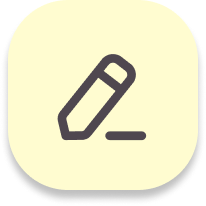

hi, my name is dana...
UX/UI design student based in Oakville, ON looking for a designer role with room to grow. Passionate about developing digital solutions to improve the lives of consumers and bring beauty to the every day. Strengths in creativity, teamwork, and building projects from ideation to execution. Advertising background coupled with strong user research skills and an eye for detail.
- 
- Born and raised in Toronto but spent time living and working abroad (Australia, Japan, Montréal)
- I’ve always enjoyed creating things. When I was little I would write and star in plays, draw maps of make-believe towns and create personalities for my stuffed animals (aka. Proto Personas). In my adult years, I dabbled in photography, blogging, took a certificate in graphic design and worked in content creation when social media platforms were up and coming.
- Spent 5 years working in advertising but wasn’t as involved in the creative process as I would’ve liked to be. I did play a part in creating some cool commercials for brands like Command, Redken and Pampers.